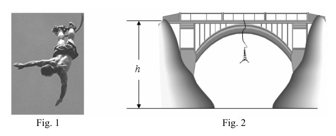

P1 El puenting. Seguramente conoces o has visto algún reportaje sobre uno de los deportes de riesgo mas llamativos, el “puenting” (bungee jumping en ingles1). Consiste en saltar desde lo alto de un puente con los tobillos sujetos a una cuerda elástica, que frena la caída con suavidad, como se muestra en la foto de la figura 1. Aunque una descripción realista del movimiento es bastante compleja, no es difícil analizar aproximadamente sus dos primeras fases: en la primera, el saltador cae libremente con la cuerda destensada, y en la segunda la cuerda se estira elásticamente hasta detener la caída del saltador en su punto más bajo. En esta segunda fase puede aceptarse que la cuerda cumple la ley de Hooke, es decir que se comporta como un muelle ideal de constante k. Supongamos que un aficionado al puenting dispone de una cuerda de longitud L = 48 m y quiere usarla para saltar desde un puente de altura h = 98 m (figura 2). Naturalmente, antes de lanzarse quiere tener ciertas garantías de que su cuerda es adecuada. En particular quiere saber si la longitud máxima que llegará a alcanzar la cuerda cuando se estire, Lmax, es menor que la altura h, ya que en caso contrario su integridad física se vería gravemente amenazada. Para tener un dato experimental sobre la elasticidad de la cuerda, este aficionado al puenting se cuelga de la cuerda y comprueba que, en equilibrio, se alarga = 12 m. a) Despreciando la resistencia del aire y suponiendo que el saltador se deja caer sin velocidad inicial, haz una estimación de la longitud máxima que llegará a tener la cuerda, Lmax. ¿Es prudente utilizar esta cuerda para saltar desde el puente indicado? b) En el proceso de caída, la cuerda empieza a jugar su papel cuando la distancia recorrida por el saltador supera la longitud “natural” L de la cuerda y comienza a estirarse hasta su longitud máxima, cuando el saltador se detiene. Haz una representación gráfica de la aceleración del saltador en función de la distancia vertical, y, recorrida desde la parte superior del puente, y = 0, hasta el punto más bajo de la caída, y = Lmax. Durante este proceso de caída ¿cuál es la aceleración máxima a la que se ve sometido el saltador? c) Supuesto que la masa del saltador es m = 70 kg, calcula la máxima fuerza que ha de soportar el enganche de la cuerda con el puente. d) Por prudencia, el aficionado al puenting decide utilizar dos cuerdas iguales en paralelo. Esto significa que el muelle equivalente a las dos cuerdas tiene una constante elástica doble, 2k. ¿Qué longitud máxima llegarán a alcanzar las dos cuerdas? ¿Cuál será la aceleración máxima del saltador en estas condiciones?
Aceleraciones comprendidas entre 4g y 6g pueden producir lesiones si no se adoptan medidas de seguridad adecuadas. Teniendo esto en cuenta, ¿es conveniente usar una cuerda “doble” para realizar un salto más seguro?
Advertencia: Aunque hayas sido capaz de resolver todas las preguntas de este problema, no creas que estás capacitado para hacer un salto de estas características. El puenting es un deporte de alto riesgo y es necesario un entrenamiento dirigido por una persona especialmente preparada.
1 Las primeras referencias de este tipo de saltos datan de 1930, cuando se descubrió que eran realizados por los indígenas de la isla Vanuatu (Islas de Pentecostés) con lianas sujetas a los pies, para probar su valor. En el club de deportes de riesgo de Bristol se realizaron en 1979 los primeros saltos con una cuerda elástica de 78 m.
Fig. 1 Fig. 2 OAF 2007 PRUEBAS DEL DISTRITO UNIVERSITARIO DE ZARAGOZA REAL SOCIEDAD ESPAÑOLA DE FÍSICA
Solución
a) Despreciando la resistencia del aire, suponiendo que el saltador se deja caer sin velocidad inicial y aceptando que la cuerda se comporta como un muelle ideal de constante k, en el proceso del salto se conserva la energía mecánica. Si consideramos como nivel de referencia para la energía potencial gravitatoria el punto más bajo que alcanza el saltador se tiene que
( ) [ ] ( )2 2 1 max max L k L L mg
(1)
donde ( )max L es el alargamiento máximo que experimenta la cuerda.
Por otra parte, como la cuerda se alarga L cuando el “aficionado” se cuelga de ella y permanece en equilibrio, se verifica que
mg L k
(2)
Combinando (1) y (2) se llega a la siguiente ecuación de segundo grado
( ) ( ) 0 2 2 2
L L L L L max max
cuya solución es
( ) L L L L L max 2 2 +
Sustituyendo los datos numéricos del enunciado y prescindiendo del valor negativo de la solución, que no tiene sentido físico, se obtiene
( ) m 48
max L
Por tanto, la longitud máxima que llega a alcanzar la cuerda es
( )max max L L L +
m 96
max L
Aunque m 98
< h Lmax , la diferencia es muy pequeña, máxime si se tiene en cuenta que el aficionado al puenting tiene una estatura no despreciable y se lanza con la cuerda atada a sus tobillos, como se aprecia en la figura 1. En un cálculo más realista debería tenerse en cuenta la distancia de su centro de masas a sus pies en el momento de lanzarse, y a su cabeza en el punto más bajo. Sin necesidad de hacer cálculos, como su altura es de unos dos metros, se comprende que su salud puede sufrir un serio quebranto si decide hacer el salto en las condiciones descritas.
b) La cuerda no juega ningún papel mientras la distancia recorrida en la caída sea menor que su longitud L, por lo que el saltador cae con una aceleración constante g. Desde que la cuerda comienza a estirarse sobre el saltador actúa, además de su peso, la fuerza recuperadora que es proporcional al estiramiento, y - L. Considerando como origen de coordenadas el punto de lanzamiento y sentido positivo hacia abajo, la segunda ley de Newton permite escribir,
( )
para 0
para L y k mg ma L y L mg ma L y max
(3)
Por tanto, en la primera fase de la caída, la aceleración con que se mueve el saltador es
L y g a
0
para
Y en la segunda fase, teniendo en cuenta (2), la aceleración en función de y es
( ) max L y L L L g y L g y a
para
1
(4)
Para y = L, esta aceleración coincide con g. Para ( )max max L L L y +
= la aceleración toma su valor máximo (en valor absoluto), dado por
( )
L L g a max max 1 g amax 3
OAF 2007 PRUEBAS DEL DISTRITO UNIVERSITARIO DE ZARAGOZA REAL SOCIEDAD ESPAÑOLA DE FÍSICA
Entre estos dos extremos la dependencia (4) de la aceleración con y es lineal, por lo que la gráfica que se pide es la de la figura 3. c) El enganche de la cuerda con el puente tiene que soportar la tensión de la cuerda que es igual a la fuerza elástica, ( ) L y k . Por lo tanto, la máxima fuerza que tiene que soportar el enganche es
( ) ( ) mg L L mg L k F max max max 4
=
Es decir
N 10 7 2 3 = , Fmax
d) Si el aficionado al puenting utiliza dos cuerdas iguales en paralelo, la constante del muelle equivalente es 2k, como indica el enunciado. La cuerda doble es más “dura”, el alargamiento máximo, ( ) max L , es menor y el frenado más brusco, con mayor aceleración.
El cálculo de ( )’ max L se realiza partiendo de la ecuación (1) cambiando la constante del muelle por 2k. De esta forma, la ecuación de segundo grado que se obtiene es
( ) ( ) 0 2
L L L L L max max
( ) m 31
L
La longitud máxima que alcanza la cuerda en este caso es
m 79
L
La nueva aceleración se obtiene como en (3), pero cambiando la constante del muelle
( ) y L k mg a m
2
Teniendo en cuenta (2)
( )
L y L g a 2 1
Por lo que la aceleración máxima es
( )
L L g a max max 2 1 g , amax 1 4
En efec

bungee jumping con corda elasticaTopic: Newtonian Mechanics, Conservation of Energy, Elasticity & Materials Metodi: Hooke’s Law, Energy Conservation Method, Free-Body Diagram, Kinematic Equations Competenze: Mathematical Modeling, Diagrammatic Reasoning, Physical Reasoning Objects: Spring Fonte: Testo (PDF) — p.1
P1 Il ponte. Probabilmente conosci o hai visto qualche articolo su uno dei sport a rischio più famosi, il puenting (bungee jumping in inglese) Consiste nel saltare da un ponte con le ginocchia attaccate a una corda elastica, che frenare il caduto con delicatezza, come mostrato nella foto di figura 1. Anche se una descrizione realistica del movimento è La velocità di un salto è molto complessa, non è difficile analizzare circa le sue due prime fasi: nella prima, il salvatore cade liberamente con la corda estesa, e nella seconda la corda si allunga elasticamente fino a fermare il salto del saltatore al suo punto più basso. In questa seconda fase si può accettare che la corda rispetti la legge di Hooke, cioè si comporta come un molo ideale di costante k. Supponiamo che un appassionato di puenting abbia una corda di lunghezza L = 48 m e voglia usarla per saltare da un punto di vista di velocità. un ponte di altezza h = 98 m (Figura 2). Naturalmente, prima di lanciare vuole avere certe garanzie che la sua corda è
- Proprio così. In particolare, vuole sapere se la lunghezza massima che raggiungerà la corda quando si allunga, Lmax, è inferiore a La quota h, altrimenti la sua integrità fisica sarebbe gravemente minacciata. Per avere un dato sperimentale sull’elasticità della corda, questo appassionato di puenting si appende alla corda e verifica che, in equilibrio, si allunga = 12 m. a) Scommetendo la resistenza dell’aria e supponendo che il saltatore si faccia cadere senza velocità iniziale, si fa una stima di la lunghezza massima che raggiungerà la corda, Lmax. È prudente usare questa corda per saltare dal ponte? indicato? b) Nel processo di caduta, la corda inizia a svolgere il suo ruolo quando la distanza percorsa dal saltatore supera la lunghezza L della corda e inizia a stendere fino alla sua lunghezza massima, quando il saltatore si ferma. Fate una. una rappresentazione grafica dell’accelerazione del saltatore in funzione della distanza verticale e, percorso dalla parte il ponte superiore, e = 0, fino al punto più basso della caduta, e = Lmax. Durante questo processo di caduta, qual è la l’accelerazione massima al quale viene sottoposto il saltatore? c) Se il salto è di 70 kg, si calcola la forza massima che deve sopportare il collegamento della corda con il ponte. d) Per prudenza, l’amatore del puenting decide di usare due corde uguali in parallelo. Questo significa che il molo L’equivalente delle due corde ha una costante doppia elastica, 2k. Qual è la lunghezza massima che raggiungeranno i due
- Le corde? Qual è la massima velocità del saltatore in queste condizioni?
Le accelerazioni comprese tra 4g e 6g possono causare lesioni se non vengono adottate adeguate misure di sicurezza. Considerando questo, è conveniente usare una corda doble per fare un salto più sicuro?
Attenzione: anche se hai risolto tutte le domande di questo problema, non credi di essere qualificato per fare un salto di queste caratteristiche. Il puenting è un sport ad alto rischio e richiede un’addestramento Diretto da una persona particolarmente preparata.
1 I primi riferimenti di questo tipo di salti risalgono al 1930, quando si scoprì che erano stati fatti dagli indigeni dell’isola di Vanuatu (Isole di Pentecoste) con le linenate attaccate ai piedi, per provare il loro valore. Nel 1979 si è svolta la Bristol Risk Sports Club i primi salti con una corda elastica di 78 m.
Fig. 1 Fig. 2 OAF 2007 Provate del Distretto Universitario di Zaragoza REAL SOCIetà spagnola di fisica
Soluzione
a) Scommettere che il salvatore si lascia cadere senza velocità iniziale e accettare che la velocità di salto sia La corda si comporta come un molo ideale di costante k, nel processo di salto viene conservata l’energia meccanica. Si Considerando il livello di riferimento per l’energia potenzialmente gravitazionale il punto più basso raggiunto dal saltatore è
- Deve essere
( ) [ ] ( )2 2 1 Max Max L k L L mg
(1)
dove ( )max L è l’allungamento massimo che la corda prova.
D’altra parte, come la corda si allunga L Quando l’amatore si appende a essa e rimane in equilibrio, si verifica che
mg L k
(2)
Combinando (1) e (2) si ottiene la seguente equazione di secondo grado
( ) ( ) 0 2 2 2
L L L L L Max Max
La cui soluzione è
( ) L L L L L max 2 2 +
Sostituendo i dati numerici della frase e dispense il valore negativo della soluzione, non ha senso fisica, si ottiene
( ) m 48
Max L
Quindi la lunghezza massima che raggiunge la corda è
( )max Max L L L +
m 96
Max L
Anche se m 98
< h Lmax , la differenza è molto piccola, soprattutto se si tiene conto che l’amatore di puenting ha una statura non sconsiderata e lanciata con la corda attaccata alle arti, come si vede nella figura 1. In un calcolo La maggior parte dei lanciatori dovrebbe tenere conto della distanza dal loro centro di massa ai piedi al momento del lancio, e della loro la testa al punto più basso. Non occorre calcolare, poiché il suo altezza è di circa due metri, si comprende che il suo la salute può essere gravemente compromessa se si decide di fare il salto nelle condizioni descritte.
b) La corda non svolge alcun ruolo finché la distanza percorsa nel caduto è inferiore alla sua lunghezza L, quindi il salter si abbassa con una costante accelerazione g. Da quando la corda inizia a stendersi sul saltatore agisce, oltre a il peso, la forza di recupero proporzionale all’estensione, e - L. Considerando come fonte di coordinate il punto di lancio e senso positivo verso il basso, la seconda legge di Newton consente di scrivere,
( )
per 0
per L y k mg ma L y L mg ma L y Max
(3)
Quindi, nella prima fase del caduta, l’accelerazione con cui il saltatore si muove è
L y g a
0
per
E nella seconda fase, considerando (2), l’accelerazione in funzione di e è
( ) Max L y L L L g y L g y a
per
1
(4)
Per y = L, questa accelerazione corrisponde a g. Per ( )max Max L L L y +
= L’accelerazione prende il suo massimo valore (in valore assoluto), dato da
( )
L L g a Max Max 1 g
- Ma non è vero. 3 = OAF 2007 Provate del Distretto Universitario di Zaragoza REAL SOCIetà spagnola di fisica
Tra queste due estremità la dipendenza (4) dell’accelerazione con e è lineare, per che la grafica che viene richiesta è quella della figura 3. c) Il collegamento della corda con il ponte deve sopportare la tensione della corda che è uguale alla forza elastica, ( ) L y k . La forza massima che ha a sopportare il colpo è
( ) ( ) mg L L mg L k F Max Max Max 4
=
Cioè,
N 10 7 2 3 = , Fmax
d) Se l’amatore di puenting usa due corde uguali in parallelo, la costante di prato equivalente è 2k, come indicato la frase. La corda doppia è più dura, l’allungamento massimo, ( ) max L , è più piccolo e il frenaggio più brusco, con maggiore accelerazione.
Il calcolo di ( )’ Max L La misurazione è effettuata partendo dall’equazione (1) cambiando la costante del molo per 2k. In questo modo, la Equazione di secondo grado che si ottiene è
( ) ( ) 0 2
L L L L L Max Max
( ) m 31
L
La lunghezza massima che raggiunge la corda in questo caso è
m 79
L
La nuova accelerazione viene ottenuta come in (3), ma cambiando la costante del molo
( ) y L k mg a m
2
Considerando (2)
( )
L y L g a 2 1
Quindi l’accelerazione massima è
( )
L L g a Max Max 2 1 g ,
- Ma non è vero. 1 4 =
In effetti
bungee jumping con corda elastica
Topic: Newtonian Mechanics, Conservation of Energy, Elasticity & Materials Metodi: Hooke’s Law, Energy Conservation Method, Free-Body Diagram, Kinematic Equations Competenze: Mathematical Modeling, Diagrammatic Reasoning, Physical Reasoning Objects: Spring Fonte: Testo (PDF) — p.1
P1 The bridging. You’ve probably seen or heard of one of the most striking risk sports, the Puenting. (bungee jumping in English1) It consists of jumping from the top of a bridge with the ankles attached to an elastic rope, which slow down the fall gently, as shown in Figure 1. Although a realistic description of the movement is The first is that the jumpper falls freely with the the rope is untied, and in the second the rope is stretched elastically until the jumper stops falling at its lowest point. In this second phase it can be accepted that the rope complies with Hooke’s law, that is, it behaves as an ideal dock of constant k. Suppose a puenting enthusiast has a string of length L = 48 m and wants to use it to jump from a bridge with a height of h = 98 m (Figure 2). Naturally, before you launch you want to have certain assurances that your rope is It’s a good one. In particular, he wants to know if the maximum length that will reach the rope when it is stretched, Lmax, is less than The height h, otherwise its physical integrity would be seriously threatened. To get an experimental data on the elasticity of the rope, this puenting enthusiast hangs from the rope and comprueba que, en equilibrio, se alarga = 12 m. a) If the air resistance is negligible and the jumper is dropped without initial speed, make an estimate of The maximum length that the rope will reach, Lmax. Is it wise to use this rope to jump off the bridge?
- What’s the point? b) In the falling process, the rope starts to play its part when the distance travelled by the jumper exceeds the length The rope starts to stretch to its maximum length when the jumper stops. Make one a graphical representation of the acceleration of the jumper in relation to the vertical distance, and, travelled from the part above the bridge, and = 0, to the lowest point of fall, and = Lmax. During this falling process what is the maximum acceleration at which the jumper is subjected? c) Assuming the mass of the jumper is m = 70 kg, calculate the maximum force to be withstood by the rope’s attachment with The bridge. d) For prudence, the puenting enthusiast decides to use two equal strings in parallel. This means that the pier It’s equivalent to the two strings, it has a double elastic constant, 2k. What maximum length will the two reach? The ropes? What will be the maximum jump acceleration under these conditions?
Accelerations between 4g and 6g may cause injury if adequate safety measures are not taken. With this in mind, is it appropriate to use a double rope to make a safer jump?
Warning: Even if you’ve been able to solve all the questions in this problem, you don’t think you’re qualified to I’m going to make a leap of these characteristics. Puenting is a high-risk sport and training is required It is directed by a person specially trained.
1 The first references to this type of jump date back to 1930, when it was discovered that they were made by the indigenous people of the island of Vanuatu (Pentecostal Islands) with lianas attached to the feet, to prove their worth. At the Bristol Risk Sports Club they were held in 1979 The first jump with a 78 m rope.
Fig. 1 Fig. 2 2007 Proofs of the ZARAGOZA University District The Spanish Royal Physical Society
Solution
a) The first is that the air resistance is neglected, assuming that the jumper is dropped without initial speed and accepting that the The rope behaves like an ideal constant k dock, in the jump process the mechanical energy is preserved. Si We consider the reference level for the gravitational potential energy the lowest point the jumper reaches is You have to
( ) [ ] ( )2 2 1 Max Max L k L L mg
(1)
where ( (max) L is the maximum length the string experiences.
On the other hand, as the rope stretches L When the amateur hangs from it and stays in balance, verify that
mg L k
(2)
Combining (1) and (2) leads to the following second-degree equation
( ) ( ) 0 2 2 2
L L L L L Max Max
whose solution is
( ) L L L L L max 2 2 +
Substituting the numerical data in the statement and disregarding the negative value of the solution, which makes no sense Physically, you get
( ) m 48
Max L
So the maximum length that reaches the rope is
( (max) Max L L L +
m 96
Max L
Although m 98
< h Lmax The difference is very small, especially if you consider that the puenting enthusiast has a not-despicable stature and thrown with the rope tied to its ankles, as shown in Figure 1. In a calculation The most realistic should take into account the distance from its mass center at its feet at the time of launch, and its Head to the lowest point. It is not necessary to make calculations, as its height is about two metres, it is understood that its The health of the person can be seriously affected if he decides to make the leap under the conditions described.
(b) The rope does not play a role as long as the distance travelled in the fall is less than its length L, so the rope is not Jump falls at a constant acceleration g. Since the rope starts to stretch over the jumper it acts, in addition to its weight, the recuperative force that is proportional to the stretch, and - L. Considering as the source of coordinates the point of launch and positive direction down, Newton’s second law allows you to write,
( )
for 0
for L y k mg ma L y L mg ma L y Max
(3)
Therefore, in the first phase of the fall, the acceleration at which the jumper moves is
L y g a
0
for
And in the second phase, taking into account (2), the acceleration function of y is
( ) Max L y L L L g y L g y a
for
1
(4)
For y = L, this acceleration is equal to g. Stop ( (max) Max L L L y +
= The acceleration takes its maximum value (in value) absolute), given by
( )
L L g a Max Max 1 g The following is the list of the countries of the European Union: 3
2007 Proofs of the ZARAGOZA University District The Spanish Royal Physical Society
Between these two extremes the dependence (4) of acceleration with y is linear, by So what the graph you’re asking for is the graph in Figure 3. c) The cable ‘s connection to the bridge has to withstand the tension of the cable which is equal to the elastic force, ( ) L y k . Therefore, the maximum force that He has to endure the hook is
( ) ( ) mg L L mg L k F Max Max Max 4
=
I mean,
N 10 7 2 3 = , Fmax
d) If the puenting enthusiast uses two equal strings in parallel, the equivalent dock constant is 2k, as indicated The sentence. The double string is more hard, the maximum length, ( ) max L , is smaller and braking more abrupt, with The speed of the engine is greater.
The calculation of ( )’ Max L The value of the value of the underlying asset is the sum of the underlying asset’s assets. In this way, the The second-degree equation that you get is
( ) ( ) 0 2
L L L L L Max Max
( ) m 31
L
The maximum length that the rope reaches in this case is
m 79
L
The new acceleration is obtained as in (3), but changing the constant of the dock
( ) y L k mg a m
2
Having regard to the Treaty on European Union (2)
( )
L y L g a 2 1
So the maximum acceleration is
( )
L L g a Max Max 2 1 g , The following is the list of the countries of the European Union: 1 4
In effect
bungee jumping with elastic rope
Topic: Newtonian Mechanics, Conservation of Energy, Elasticity & Materials Metodi: Hooke’s Law, Energy Conservation Method, Free-Body Diagram, Kinematic Equations Competenze: Mathematical Modeling, Diagrammatic Reasoning, Physical Reasoning Objects: Spring Fonte: Testo (PDF) — p.1